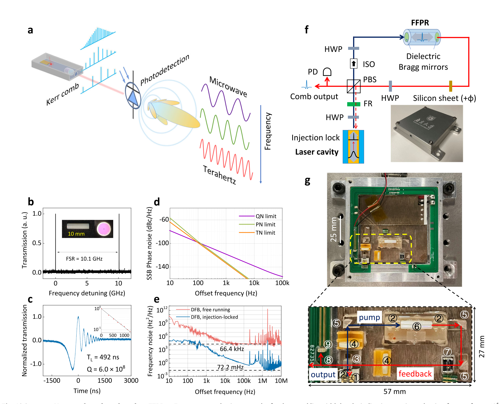
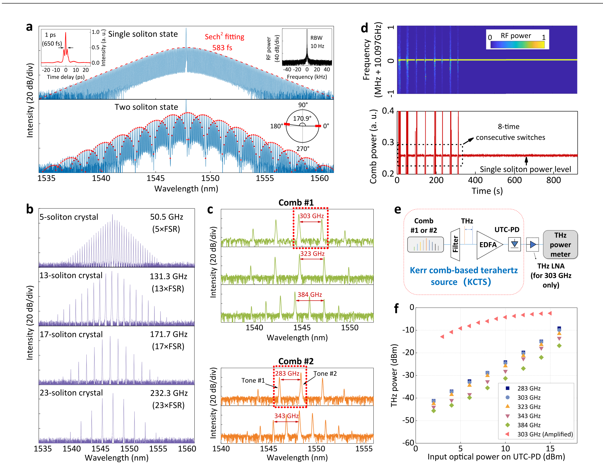
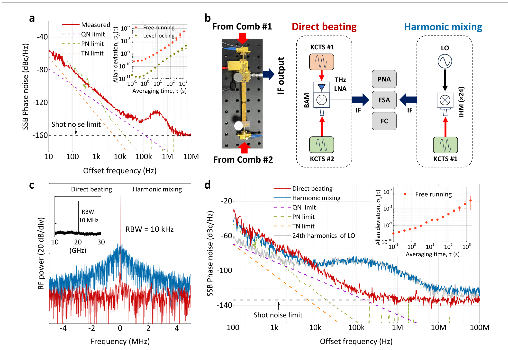
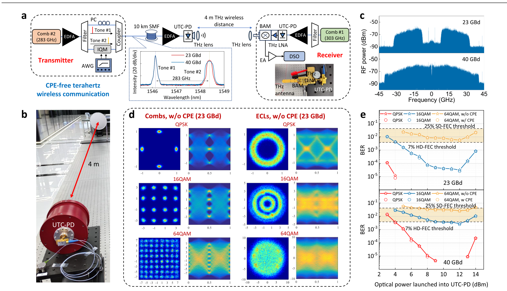

FIG. 1
低噪声从哪里来：高 Q 光纤腔把 DFB 激光“拽”到共振上
这一图先证明谐振器质量，再证明自注入锁定确实把激光频噪降下去，最后展示封装尺度。

作者把超高 Q 光纤 Fabry–Pérot 谐振器、DFB 激光自注入锁定与孤子光梳装进小型模块，稳定产生 10.1–384 GHz 的频率间隔。两套光梳拍频后，完成 10 km 光纤 + 4 m 无线的 283/303 GHz 通信；但“compact”主要指光源，不是把整套太赫兹收发机缩成芯片。
图像来自用户提供的原始论文 PDF，仅按原样截取图体并标明出处，不分发整篇 PDF。原文采用 CC BY-NC-ND 4.0；本站不改绘图像，仅用于非商业个人研究解读。
少模光纤 Fabry–Pérot 谐振器（FFPR，Q≈6.0×10⁸、FSR≈10.1 GHz）通过瑞利散射把 DFB 激光自注入锁定，频率噪声压低超过 10⁵，基本线宽由 66.4 kHz 降到约 72.2 mHz。利用单/多孤子与孤子晶体，作者获得 10.1–384 GHz 可选频率间隔，并以 283 GHz 载波实现 40 GBd 64QAM：线速率 240 Gbps、扣除 25% FEC 后净速率 186.24 Gbps。
这一图先证明谐振器质量，再证明自注入锁定确实把激光频噪降下去，最后展示封装尺度。

作者用热—光反馈让激光开机后自动落入孤子态，并把两个光梳模块作为太赫兹频率合成器。

相位噪声随梳齿间隔放大，但在相应频段仍接近泵浦、热噪声或量子噪声限制。

两套窄线宽光梳既产生 283 GHz 载波，也在接收端提供相干本振，减少 DSP 中的载波相位估计。
